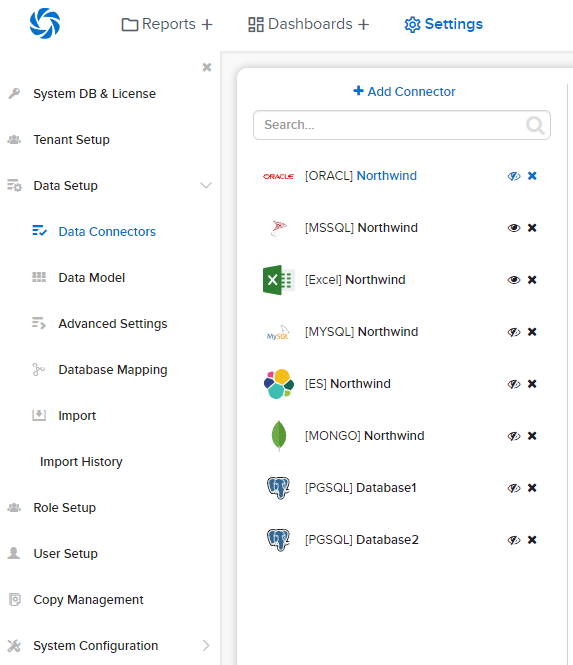

Data Connectors¶
The Data Connectors page allows user to
- manage the list of connectors
- select individual items from these connectors to be visible in Data Model and Reports
Note
For the Reporting Databases:
- The connection string user should have permissions to read schema; to select on all tables, views, store procedures and functions that will be used as data sources; to execute those store procedures and functions.
- The user should also have permissions to create temp tables.
Add connector and select visible data sources¶
In this step user adds a connector and selects data sources to be visible in reports.
Warning
Please use caution when adding stored procedures to the visible data source list. All stored procedures are executed when added to visible (input parameters are set to NULL) to obtain the resulting fields returned. Some stored procedures are created to do things like delete tables, add data to tables, etc. If these are added to the visible data sources, they will be executed in the database.
In browser, log in to Izenda as a user with Data Connectors permission.
Click Settings, then Data Setup then Data Connectors in the left menu.
Fig. 48 Add Connector
Select the Setting Level: either System or a specific tenant.
Click on Add Connector in the middle panel.

Fig. 49 Connector Data Server Type
Select the data server type from the popup.
The Database Connection popup appears for configuring the connector.
- Fill in the Server Name, e.g. “yourdbserver.com”.
- Fill in the Database name, e.g. “Northwind”.
- Select the Authentication type from the drop-down box.
- Fill in the Login and Password if necessary.
- Optional. Fill in the additional connection options specific to the selected data server.
These steps can be bypassed when user already knows the connection string. In this case, it can be copied and pasted straight into the Connection String box. For examples of connection strings, please see the Connection String Examples section below. To do this, switch to Connection String mode:
Click OK button to verify the connection and go to the next step after all required fields are filled in.
Note
- Unless the Connection String has been verified successfully, user will not be able to move next.
The connector name will be automatically populated from the database name. User can edit to give it a more suitable name.
Expand the listed user schemas and object types to see the data sources.
The data sources can be quickly filtered by typing a partial name in the Search box.Click on the data sources to move them between the two lists. User can quickly move all data sources in a group (Table, View, Stored Procedure or Function) by clicking on that group name.
Click Save button at the top to save the connector and the visible data sources.
{kind=link}
{kind=link}
{kind=link}
{kind=link}
{kind=link}
Connector Permissions¶
Izenda needs permissions to view the database schema and read from selected tables and views.
If using stored procedures as data source, Izenda needs execute permission on these stored procedures as well as create table and delete table permissions.
Note
The create table permission will be used to create temporary tables to store the output of stored procedures, for joining to other data sources. And the delete table permission will be used to clean up these temporary tables afterwards.
Delete connector¶
- Click the delete icon (x) on the right of a connector to delete it.
- Click OK in the confirmation pop-up.
{kind=link}
{kind=link}
Refresh the list of available data sources¶
When there is a remote change in a connector, it will not be automatically reflected in Izenda. The Reconnect button needs to be manually clicked on to detect that.
Click on the connector.
Click the Reconnect button.
The remote changes in the data sources will be marked as either New data source or Changed data source.
Go to Data Model page to resolve the changes.
{kind=link}
Filter the connector list¶
The connector list can be quickly filtered by typing a partial connector name in the Search box.
Cancel the changes¶
To cancel any changes without saving:
- Click the Cancel button at the top.
- Click OK in the confirmation pop-up.
Connection String Examples¶
- Oracle:
- Data Source=(DESCRIPTION=(ADDRESS=(PROTOCOL=TCP)(HOST=192.168.45.37)(PORT=1521))(CONNECT_DATA=(SERVICE_NAME=MyOracleSID)));User Id=user;Password=password;
- Data Source=(DESCRIPTION=(ADDRESS=(PROTOCOL=TCP)(HOST=192.168.45.37)(PORT=1521))(CONNECT_DATA=(SID=xe)));User Id=user;Password=password;
- Microsoft SQL Server:
- Server=192.168.45.37,1433;Database=testdatabase;User ID=user;Password=password
- Server=HOST-PC;Database=testdatabase;User ID=user;Password=password
- MySQL:
- Server=MY-PC;Port=3306;Database=testdatabase;User ID=user;Password=password
- PostgreSQL:
- Server=mydomainname;Port=5432;Database=testdatabase;User ID=user;Password=password
- Server=mydomainname;Port=5432;Database=testdatabase;User ID=user;Password=password;SslMode=Require;Trust Server Certificate=true;
Note
- If using Izenda v3.0.0 or greater and a PostgreSQL connection string with “SslMode=Require”, the “Trust Server Certificate=true;” parameter will also need to be added.
- Elasticsearch:
- server=https://xxxxxxxx.us-east-1.aws.found.io;Port=9243;User=user;Password=password;
- MongoDB:
- Server=localhost;Port=27017;Database=admin;User=user;Password=password;
- User=user;Password=password;Server=atlas-host1;Port=27017;Database=testdatabase;AuthDatabase=admin;AuthMechanism=SCRAM-SHA-1;ReplicaSet=cluster0-shard-00-01-u49p2.mongodb.net:27017,cluster0-shard-00-02-u49p2.mongodb.net:27017;UseSSL=true;SlaveOK=true;